Leonardo da Vinci — 500th Death Anniversary
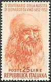
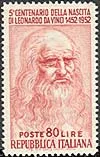
I have offended God and mankind because my work did not reach the quality it should have (Da Vinci's dying words)
Leonardo da Vinci (15 April 1452 - 2 May 1519) was an Italian polymath of the Renaissance whose areas of interest included invention, drawing, painting, sculpting, architecture, science, music, mathematics, engineering, literature, anatomy, geology, astronomy, botany, writing, history, and cartography. He has been variously called the father of paleontology, ichnology, and architecture, and he is widely considered one of the greatest painters of all time.
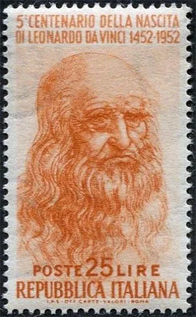
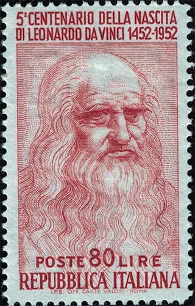
Sometimes credited with the inventions of the parachute, helicopter, and tank, he epitomised the Renaissance humanist ideal. Many historians and scholars regard Leonardo as the prime exemplar of the "Universal Genius" or "Renaissance Man", an individual of "unquenchable curiosity" and "feverishly inventive imagination", and he is widely considered one of the most diversely talented individuals ever to have lived. Source: Wikipedia .
The above stamps, issued by Italy in 1952 (Scott No. 601, 601B) commemorate the 500 th anniversary of birth of the great man.
In February 2019, to mark the 500 th anniversary of the death of Leonardo da Vinci , 144 of the Renaissance master's greatest drawings in the Royal Collection will go on display in 12 simultaneous exhibitions across the UK. Royal Mail have released their designs for a new set of stamps to celebrate the work of Leonardo da Vinci. The stamps feature his drawings of people and objects in preparation for his masterpiece, The Last Supper. They include drawings of the Star of Bethlehem and even a blueprint for the world's largest horse statue. The 12-piece stamp set shows drawings which will be displayed in exhibitions across the UK to mark 500 years since he died.
The stamps are presented in two se-tenant strips of six and feature the following original Leonardo da Vinci drawings from Royal Collection Trust. Please admire below the FDC featuring the whole set of 12 stamps.
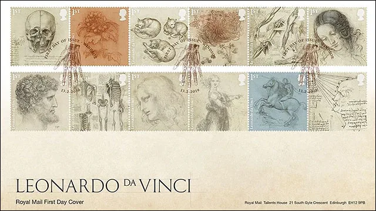
The presentation of each stamps of the set follows.
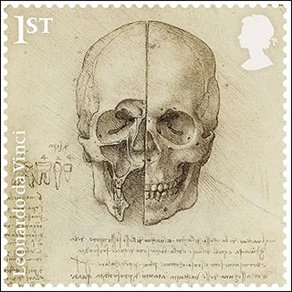
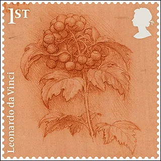
The skull sectioned. The skull drawing by Leonardo da Vinci shows two halves of a human skull in proportion. A sprig of guelder rose. This drawing of the Guelder-rose shows the early study and sketching of plants, flowers and wildlife by Leonardo da Vinci in the early 1500s. The drawing shows the rose surrounded by berries.
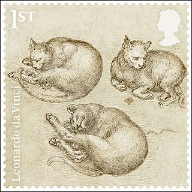
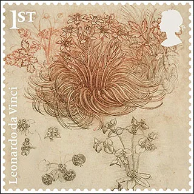
Studies of cats. They include a pen and ink drawing of sleeping cats, pictured above. A star-of-Bethlehem and other plants. This drawing of Star of Bethlehem was painted in the early 1500s. The drawing shows the flowers blooming in intricate detail. A Royal Mail spokesman said Leonardo's drawings still 'inspire and intrigue' the public today.
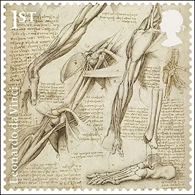
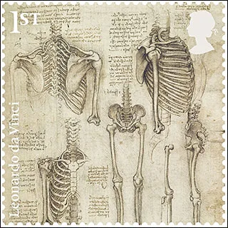
The anatomy of the shoulder and foot. Leonardo da Vinci's work also included anatomy of the human body, with intricate detail of the human muscles and bone structure. The detailed drawings give a fascinating insight into the science of the Middle Ages. The skeleton.This stamp shows the human rib structure, the arm and leg joints and an overview of the spine. The fascinating drawings, alongside detailed medical notes, gives insight into how medicine was administered at the time.
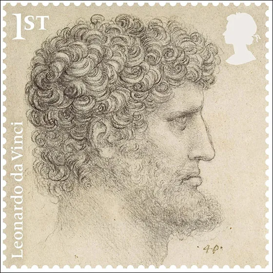
The head of a bearded man. This bearded man is another fascinating drawing created by Leonardo da Vinci.
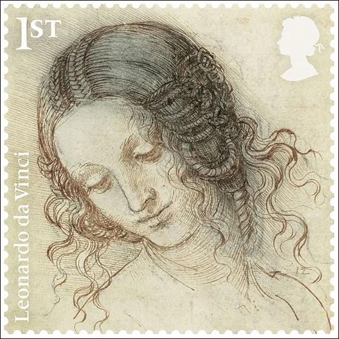
The head of Leda. The new stamp collection also includes a drawing of Head of Leda. Leda is the fictional queen of Sparta, who fell in love with Jupiter while he was in the form of a swan, according to Greek myth.
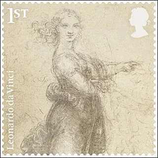
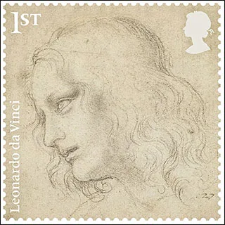
A woman in a landscape. Another of Leonardo da Vinci's drawings shows a woman from a distance, surrounded by a landscape. The head of St Philip. The stamp set includes a drawing of St Philip, pictured above. The drawing was preparatory work for Leonardo's masterpiece, The Last Supper.
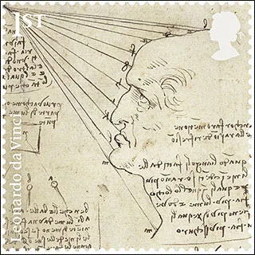
A design for an equestrian monument. The artist's Equestrian monument was supposed to be a blueprint for the world's largest statue of a horse. Leonardo da Vinci was tasked by a Duke to build the model, but only made a small clay prototype, which was later destroyed. The fall of light on a face.
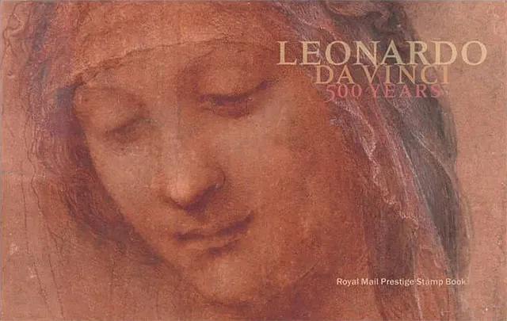
The Leonardo da Vinci Prestige Stamp Book includes the Head of the Madonna on the front cover and the Head of St Anne on the reverse. Richly illustrated, the book explores the many facets of Leonardo da Vinci – his drawings, the materials he used, his paintings, his sculptures and his work as an anatomist. It also includes a short biography and examples of his finest works.
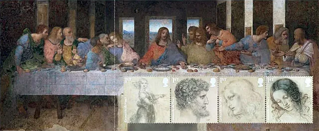
The book is complemented by three stamp panes containing all 12 Special Stamps. Set against a background, they are featuring examples of his drawings and paintings, including ‘The Last Supper’.
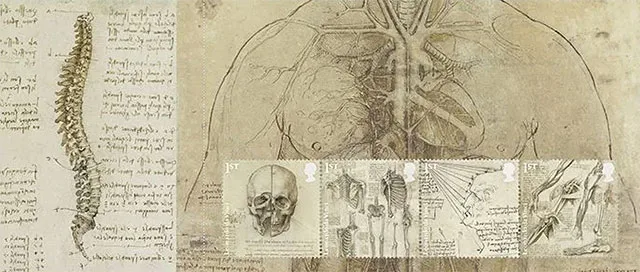
All these beauties, and more, could be bought online, at the time of the publishing of this homage page, from the Royal Mail site.
Created: Feb. 11, 2019. Revised: Feb. 11, 2019 . Copyright © 2019 by Victor Manta, Switzerland. Copyright © 2019 Drawings by the Royal Post & the Collection of Her Majesty The Queen. All rights reserved worldwide.
Click the above image to visit the site
Original: Art-Gallery/Leonardo/leonardo-500-death-anniversary.htm. Preview edition; image descriptions and editorial layout remain under review.